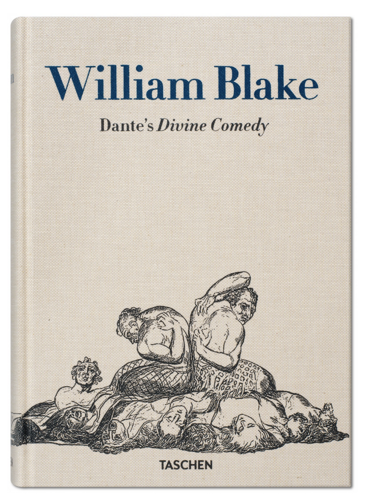

Writing is a designer’s ‘Unicorn Skill’. As observed by Fast Company, ‘Forget Coding: Writing Is Design’s “Unicorn Skill”’, few designers are fluent in their language as they are in coding skills. Design, copy, and code are of equal importance in a digital product. What the user is most concerned with, is not the design or how the website (app, or other products) performs, but the content it provides.
My struggles in writing
Writing was never my forte. I scored C6 (C for Cringeworthy, minimum passing grade) for my English language examinations in my primary, secondary, and tertiary education.
At university, I signed up for a visual communication course, thinking that I can place my focus on graphic and imagery. Yet, I ended up writing for ten art history modules to fulfil the Bachelor of Fine Arts requirements. After graduation, at my startup, I was introduced to digital marketing and began sharing what I learn on my blog. Since transitioning from a graphic to a UX designer, I write about design and share about my projects on Medium.Through consistent writing over the years, whether forced or done based on my will, I grew to be more confident with my writing. These days, before publishing my articles, I use tools such as the ProWritingAid extension on Google Docs and Grammarly to vet through my writing. These tools also give me pointers on how to improve my writing style.

Modulor by Le Corbusier, 1948
“Sure, you can have a beautiful UI/frame, but once you have that (we all know a great UI is an invisible UI), all the viewer cares about is what’s inside: the artwork, the story.” — Paul Woods, COO of the digital design firm Edenspiekermann,Thinking Beyond the Interface, Fast Company, 26 Jan 2017.


William Blake. Dante's Divine Comedy. Taschen, 2017
Araki by Araki, Taschen, 2014